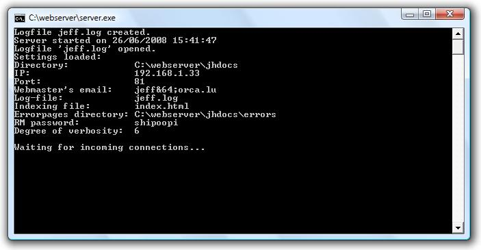

Mon programme est un serveur web, qui impl�mente partiellement le protocole HTTP/1.0. Une documentation compl�te de ce protocole peut �tre trouv�e dans le RFC 1945 � l'adresse http://rfc.net/rfc1945.html.
Le r�le de mon programme est de surveiller un certain port r�seau et de r�agir � des requ�tes. Si un h�te envoie une requ�te GET, il recevra en retour soit le fichier qu'il a r�clam�, soit, en cas d'erreur, une page d'erreur correspondante.
| Mot-clef | Description | Valeur par d�faut | Valeurs possibles |
|---|---|---|---|
| ip | Adresse IPv4 sur laquelle le serveur �coutera | 127.0.0.1 | Toute adresse IPv4 de l'ordinateur |
| port | Port sur lequel le serveur �coutera | 80 | 0 - 65535 (sauf ports occup�s) |
| verbosity | Verbosit� (degr� d'�loquence) du programme (voir ci-dessous) | 4 | 0 - 9 |
| mastermail | Adresse courriel du responsable du site | webmaster@[adresse IP] | Toute adresse courriel |
| logfile | Nom du fichier "journal de bord" | jeff.log | Tout nom de fichier (absolu ou relatif) |
| index | Nom du fichier initial de chaque dossier | index.html | Tout nom de fichier (absolu ou relatif) |
| path | Chemin absolu du dossier dans lequel sont les pages web � envoyer | Le chemin dans lequel est ex�cut� le programme | Tout chemin absolu existant |
| errordir | Chemin absolu du dossier dans lequel sont les pages d'erreur | [path]\errors | Tout chemin absolu existant |
| rmpass | Mot de passe pour le Remote Management | rien | Toute chaine de caract�res |
| Exemple d'un fichier de configuration | Le programme avec cette configuration |
|---|---|
ip: 192.168.1.33
|
 |
| action | value | Effet caus� |
|---|---|---|
| shutdown | halt | Arr�t complet du serveur. |
| restart | Red�marrage du serveur. | |
| reload | conf | Relecture du fichier de configuration entier. |
| contenttypes | Rechargement du tableau des types de contenu en fonction des extensions fichier. (Pas encore impl�ment�) | |
| swap | conf | Lecture d'un autre fichier de configuration. Le nom est envoy� comme attribut au mot-clef "file". |
| log | �changement du fichier "journal de bord" de fa�on � ce qu'on puisse utiliser le vieux fichier avec d'autres applications ce qui est impossible quand le fichier est en utilisation par le serveur. |
© Jeff Hemmen